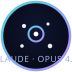

Enterprise Observatory
Initializing live embeddings
Downloading all-MiniLM-L6-v2…
Live · Enterprise
Real embedding geometry — theatrical orbit, precision probe, cinematic field.

A ParaView-family tool for seeing what a model knows.
AI research generates enormous high-dimensional data — embeddings, activations, training trajectories — and almost everyone views it through flat 2D plots. This turns an embedding space into a navigable 3D world: semantic neighborhoods you can orbit and a probe you can sweep to light up by distance.
Three data paths: a curated concept atlas with live MiniLM embeddings, your own words, and your own file (CSV/TSV) reduced in a background worker. No synthetic demo — every point is real model output or your data.
Rendered with vtk.js and live all-MiniLM-L6-v2 embeddings via Transformers.js. 100% client-side: no server, no API key, no install.
Want a cinematic solar system instead? Solar Planets is the dedicated 3D tour of our Sun and worlds.